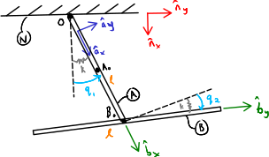

import sympy as sm
import sympy.physics.mechanics as me
me.init_vprinting()
import numpy as np
from IPython.display import SVG, display
from IPython.core.interactiveshell import InteractiveShell
InteractiveShell.ast_node_interactivity = "all"Kane Equations of Motion
multibody
reference frame
rotation
Kane
A post about multibody dynamics
A multibody system comprised of two uniformly dense thin rods of length \(l\) and mass \(𝑚\). Rod \(𝐴\) is pinned at \(𝑂\) and can rotate about \(\hat{n}_{z}\) through \(q_{1}\). Rod \(B\) is pinned to \(A\) and can rotate relative to \(A\) about \(\hat{a}_{x}\) through \(q_{2}\). Linear torisional springs of stiffnes \(k\) with a free length of zero resists each relative rotation. Gravitational forces are in the \(\hat{n}_{x}\) direction.
svg_path = "/Users/jalalelhazzat/Documents/DEV2023/jnbooks/Multibody/Images/Generalised-Forces-Rigid-Body.svg"
display(SVG(filename=svg_path))
REFERENCE FRAME AND VARIABLES SETUP
l, m, g, k = sm.symbols('l, m, g, k')
q1, q2, u1, u2 = me.dynamicsymbols('q1, q2, u1, u2')
t = me.dynamicsymbols._t
N = me.ReferenceFrame('N')
A = me.ReferenceFrame('A')
B = me.ReferenceFrame('B')
A.orient_axis(N, q1, N.z)
B.orient_axis(A, q2, A.x)
print(f"Below we display the Direction Cosine Matrices of reference frame A and B "
f"with respect to reference frame N \n")
A.dcm(N)
B.dcm(N)Below we display the Direction Cosine Matrices of reference frame A and B with respect to reference frame N
\(\displaystyle \left[\begin{matrix}\cos{\left(q_{1} \right)} & \sin{\left(q_{1} \right)} & 0\\- \sin{\left(q_{1} \right)} & \cos{\left(q_{1} \right)} & 0\\0 & 0 & 1\end{matrix}\right]\)
\(\displaystyle \left[\begin{matrix}\cos{\left(q_{1} \right)} & \sin{\left(q_{1} \right)} & 0\\- \sin{\left(q_{1} \right)} \cos{\left(q_{2} \right)} & \cos{\left(q_{1} \right)} \cos{\left(q_{2} \right)} & \sin{\left(q_{2} \right)}\\\sin{\left(q_{1} \right)} \sin{\left(q_{2} \right)} & - \sin{\left(q_{2} \right)} \cos{\left(q_{1} \right)} & \cos{\left(q_{2} \right)}\end{matrix}\right]\)
KINEMATICS
O = me.Point('O')
A0 = me.Point('A0')
B0 = me.Point('B0')
A0.set_pos(O, 0.5 * l * A.x)
B0.set_pos(O, l * A.x)
A0.pos_from(O).express(N)
B0.pos_from(A0).express(N)\(\displaystyle 0.5 l \cos{\left(q_{1} \right)}\mathbf{\hat{n}_x} + 0.5 l \sin{\left(q_{1} \right)}\mathbf{\hat{n}_y}\)
\(\displaystyle 0.5 l \cos{\left(q_{1} \right)}\mathbf{\hat{n}_x} + 0.5 l \sin{\left(q_{1} \right)}\mathbf{\hat{n}_y}\)
A.set_ang_vel(N, q1.diff(t) * N.z)
B.set_ang_vel(A, q2.diff(t) * A.x)
A.ang_vel_in(N)
B.ang_vel_in(N)\(\displaystyle \dot{q}_{1}\mathbf{\hat{n}_z}\)
\(\displaystyle \dot{q}_{2}\mathbf{\hat{a}_x} + \dot{q}_{1}\mathbf{\hat{n}_z}\)
O.set_vel(N, 0)
_ = A0.v2pt_theory(O, N, A)
A0.set_vel(A, 0)
_ = B0.v2pt_theory(A0, A, B)
A0.vel(N)
B0.vel(N)\(\displaystyle 0.5 l \dot{q}_{1}\mathbf{\hat{a}_y}\)
\(\displaystyle l \dot{q}_{1}\mathbf{\hat{a}_y}\)
We choose the generalised speeds to be equal to the inertial time derivative of generalised coordinates:
\[ u_{1} = \dot{q}_{1} u_{2} = \dot{q}_{2} \]
We then rewrite velocities and angular velocities replacing instances of \(\dot{q}_{1}\) and \(\dot{q}_{2}\) with \(u_{1}\) and \(u_{2}\)
generalised_speeds = {q1.diff(): u1, q2.diff(): u2}
N_v_A0 = A0.vel(N).xreplace(generalised_speeds)
N_v_B0 = B0.vel(N).xreplace(generalised_speeds)
N_v_A0
N_v_B0
N_w_A = A.ang_vel_in(N).xreplace(generalised_speeds)
N_w_B = B.ang_vel_in(N).xreplace(generalised_speeds)
N_w_A
N_w_B\(\displaystyle 0.5 l u_{1}\mathbf{\hat{a}_y}\)
\(\displaystyle l u_{1}\mathbf{\hat{a}_y}\)
\(\displaystyle u_{1}\mathbf{\hat{n}_z}\)
\(\displaystyle u_{2}\mathbf{\hat{a}_x} + u_{1}\mathbf{\hat{n}_z}\)
PARTIAL VELOCITIES
To compute the partial velocities \(\boldsymbol{v}_{r}\) we compute the partial derivatives of the velocities for both bodies \(A\) and \(B\) with respect to \(u_{r}\).
v_A0_1 = N_v_A0.diff(u1, N)
v_A0_2 = N_v_A0.diff(u2, N)
v_A0_t = N_v_A0.xreplace({u1: 0, u2: 0})
v_B0_1 = N_v_B0.diff(u1, N)
v_B0_2 = N_v_B0.diff(u2, N)
v_B0_t = N_v_B0.xreplace({u1: 0, u2: 0})
v_A0_1, v_A0_2, v_A0_t
v_B0_1, v_B0_2, v_B0_t\(\displaystyle \left( 0.5 l\mathbf{\hat{a}_y}, \ 0, \ 0\right)\)
\(\displaystyle \left( l\mathbf{\hat{a}_y}, \ 0, \ 0\right)\)
# generalised_speeds = {q1.diff(): u1, q2.diff(): u2}
# N_w_A = A.ang_vel_in(N).xreplace(generalised_speeds)
# N_w_B = B.ang_vel_in(N).xreplace(generalised_speeds)
# N_w_A
# N_w_BPARTIAL ANGULAR VELOCITIES
To compute the partial angular velocities \(\boldsymbol{\omega}_{r}\) we compute the partial derivatives of the angular velocities for both bodies \(A\) and \(B\) with respect to \(u_{r}\).
w_A_1 = N_w_A.diff(u1, N)
w_A_2 = N_w_A.diff(u2, N)
w_A_t = N_w_A.xreplace({u1: 0, u2: 0})
w_B_1 = N_w_B.diff(u1, N)
w_B_2 = N_w_B.diff(u2, N)
w_B_t = N_w_B.xreplace({u1: 0, u2: 0})
w_A_1, w_A_2, w_A_t
w_B_1, w_B_2, w_B_t\(\displaystyle \left( \mathbf{\hat{n}_z}, \ 0, \ 0\right)\)
\(\displaystyle \left( \mathbf{\hat{n}_z}, \ \mathbf{\hat{a}_x}, \ 0\right)\)
GENERALISED ACTIVE FORCES
R_Ao = m * g * N.x
R_Bo = m * g * N.x
F1 = me.dot(v_A0_1, R_Ao) + me.dot(v_B0_1, R_Bo)
F2 = me.dot(v_A0_2, R_Ao) + me.dot(v_B0_2, R_Bo)
T_A = -k * q1 * N.z + k * q2 * A.x
T_B = -k * q2 * A.x
T1 = me.dot(w_A_1, T_A) + me.dot(w_B_1, T_B)
T2 = me.dot(w_A_2, T_A) + me.dot(w_B_2, T_B)GAF = sm.Matrix([F1 + T1, F2 + T2])
GAF\(\displaystyle \left[\begin{matrix}- 1.5 g l m \sin{\left(q_{1} \right)} - k q_{1}\\- k q_{2}\end{matrix}\right]\)
ANOTHER WAY
GENERALISED INERTIA FORCES
A0.vel(N)
B0.vel(N)
A.ang_vel_in(N)
B.ang_vel_in(N)\(\displaystyle 0.5 l \dot{q}_{1}\mathbf{\hat{a}_y}\)
\(\displaystyle l \dot{q}_{1}\mathbf{\hat{a}_y}\)
\(\displaystyle \dot{q}_{1}\mathbf{\hat{n}_z}\)
\(\displaystyle \dot{q}_{2}\mathbf{\hat{a}_x} + \dot{q}_{1}\mathbf{\hat{n}_z}\)
A0.acc(N)
B0.acc(N)
A.ang_acc_in(N)
B.ang_acc_in(N)\(\displaystyle - 0.5 l \dot{q}_{1}^{2}\mathbf{\hat{a}_x} + 0.5 l \ddot{q}_{1}\mathbf{\hat{a}_y}\)
\(\displaystyle - l \dot{q}_{1}^{2}\mathbf{\hat{a}_x} + l \ddot{q}_{1}\mathbf{\hat{a}_y}\)
\(\displaystyle \ddot{q}_{1}\mathbf{\hat{n}_z}\)
\(\displaystyle \ddot{q}_{2}\mathbf{\hat{a}_x} + \dot{q}_{1} \dot{q}_{2}\mathbf{\hat{a}_y} + \ddot{q}_{1}\mathbf{\hat{n}_z}\)
Similarly, we rewrite accelerations and angular accelerations replacing instances of \(\dot{q}_{1}\), \(\dot{q}_{2}\), \(\ddot{q}_{1}\) and \(\ddot{q}_{2}\) with \(u_{1}\), \(u_{2}\), \(\dot{u}_{1}\) and \(\dot{u}_{2}\)
generalised_speeds = {q1.diff(): u1, q2.diff(): u2, q1.diff().diff(): u1.diff(), q2.diff().diff(): u2.diff()}
N_a_A0 = A0.acc(N).xreplace(generalised_speeds)
N_a_B0 = B0.acc(N).xreplace(generalised_speeds)
N_a_A0
N_a_B0
N_alpha_A = A.ang_acc_in(N).xreplace(generalised_speeds)
N_alpha_B = B.ang_acc_in(N).xreplace(generalised_speeds)
N_alpha_A
N_alpha_B\(\displaystyle - 0.5 l u_{1}^{2}\mathbf{\hat{a}_x} + 0.5 l \dot{u}_{1}\mathbf{\hat{a}_y}\)
\(\displaystyle - l u_{1}^{2}\mathbf{\hat{a}_x} + l \dot{u}_{1}\mathbf{\hat{a}_y}\)
\(\displaystyle \dot{u}_{1}\mathbf{\hat{n}_z}\)
\(\displaystyle \dot{u}_{2}\mathbf{\hat{a}_x} + u_{1} u_{2}\mathbf{\hat{a}_y} + \dot{u}_{1}\mathbf{\hat{n}_z}\)
moment_of_inertia_rod = m * l**2 / 12
print(f"The principal moment of inertia of a rod about the the plan of "
f"symmetry orthogonal to the rod length \n")
moment_of_inertia_rodThe principal moment of inertia of a rod about the the plan of symmetry orthogonal to the rod length
\(\displaystyle \frac{l^{2} m}{12}\)
I_A_Ao = moment_of_inertia_rod * me.outer(A.y, A.y) + moment_of_inertia_rod * me.outer(A.z, A.z)
I_B_Bo = moment_of_inertia_rod * me.outer(B.x, B.x) + moment_of_inertia_rod * me.outer(B.z, B.z)
print(f"This is the rod A inertia dyadic and its matrix form \n")
I_A_Ao
I_A_Ao.to_matrix(A)
print(f"\nThis is the rod B inertia dyadic and its matrix form \n")
I_B_Bo
I_B_Bo.to_matrix(B)This is the rod A inertia dyadic and its matrix form
\(\displaystyle \frac{l^{2} m}{12}\mathbf{\hat{a}_y}\otimes \mathbf{\hat{a}_y} + \frac{l^{2} m}{12}\mathbf{\hat{a}_z}\otimes \mathbf{\hat{a}_z}\)
\(\displaystyle \left[\begin{matrix}0 & 0 & 0\\0 & \frac{l^{2} m}{12} & 0\\0 & 0 & \frac{l^{2} m}{12}\end{matrix}\right]\)
This is the rod B inertia dyadic and its matrix form
\(\displaystyle \frac{l^{2} m}{12}\mathbf{\hat{b}_x}\otimes \mathbf{\hat{b}_x} + \frac{l^{2} m}{12}\mathbf{\hat{b}_z}\otimes \mathbf{\hat{b}_z}\)
\(\displaystyle \left[\begin{matrix}\frac{l^{2} m}{12} & 0 & 0\\0 & 0 & 0\\0 & 0 & \frac{l^{2} m}{12}\end{matrix}\right]\)
R_Ao_star = -m * N_a_A0
R_Bo_star = -m * N_a_B0
F1_star = me.dot(v_A0_1, R_Ao_star) + me.dot(v_B0_1, R_Bo_star)
F2_star = me.dot(v_A0_2, R_Ao_star) + me.dot(v_B0_2, R_Bo_star)T_A_star = -(
me.dot(N_alpha_A, I_A_Ao) + me.dot( me.cross(N_w_A, I_A_Ao), N_w_A )
)
T_B_star = -(
me.dot(N_alpha_B, I_B_Bo) + me.dot( me.cross(N_w_B, I_B_Bo), N_w_B )
)
T1_star = me.dot(w_A_1, T_A_star) + me.dot(w_B_1, T_B_star)
T2_star = me.dot(w_A_2, T_A_star) + me.dot(w_B_2, T_B_star)R_Ao_star, R_Bo_star
T_A_star
T_B_star\(\displaystyle \left( 0.5 l m u_{1}^{2}\mathbf{\hat{a}_x} - 0.5 l m \dot{u}_{1}\mathbf{\hat{a}_y}, \ l m u_{1}^{2}\mathbf{\hat{a}_x} - l m \dot{u}_{1}\mathbf{\hat{a}_y}\right)\)
\(\displaystyle - \frac{l^{2} m \dot{u}_{1}}{12}\mathbf{\hat{a}_z}\)
\(\displaystyle (- \frac{l^{2} m u_{1}^{2} \sin{\left(q_{2} \right)} \cos{\left(q_{2} \right)}}{12} - \frac{l^{2} m \dot{u}_{2}}{12})\mathbf{\hat{b}_x} + (- \frac{l^{2} m \left(- u_{1} u_{2} \sin{\left(q_{2} \right)} + \cos{\left(q_{2} \right)} \dot{u}_{1}\right)}{12} + \frac{l^{2} m u_{1} u_{2} \sin{\left(q_{2} \right)}}{12})\mathbf{\hat{b}_z}\)
F1 = F1_star + T1_star
F2 = F2_star + T2_starGIF = sm.Matrix([F1, F2])
GIF\(\displaystyle \left[\begin{matrix}- 1.33333333333333 l^{2} m \dot{u}_{1} + \left(- \frac{l^{2} m \left(- u_{1} u_{2} \sin{\left(q_{2} \right)} + \cos{\left(q_{2} \right)} \dot{u}_{1}\right)}{12} + \frac{l^{2} m u_{1} u_{2} \sin{\left(q_{2} \right)}}{12}\right) \cos{\left(q_{2} \right)}\\- \frac{l^{2} m u_{1}^{2} \sin{\left(q_{2} \right)} \cos{\left(q_{2} \right)}}{12} - \frac{l^{2} m \dot{u}_{2}}{12}\end{matrix}\right]\)
EQUATIONS OF MOTION
q = sm.Matrix([q1, q2])
u = sm.Matrix([u1, u2])
qd = q.diff(t)
ud = u.diff(t)
ud_zerod = {udr: 0 for udr in ud}
Mk = -sm.eye(3)
gk = u
Md = GIF.jacobian(ud)
gd = GIF.xreplace(ud_zerod) + GAFMk
gk\(\displaystyle \left[\begin{matrix}-1 & 0 & 0\\0 & -1 & 0\\0 & 0 & -1\end{matrix}\right]\)
\(\displaystyle \left[\begin{matrix}u_{1}\\u_{2}\end{matrix}\right]\)
Md
gd\(\displaystyle \left[\begin{matrix}- \frac{l^{2} m \cos^{2}{\left(q_{2} \right)}}{12} - 1.33333333333333 l^{2} m & 0\\0 & - \frac{l^{2} m}{12}\end{matrix}\right]\)
\(\displaystyle \left[\begin{matrix}- 1.5 g l m \sin{\left(q_{1} \right)} - k q_{1} + \frac{l^{2} m u_{1} u_{2} \sin{\left(q_{2} \right)} \cos{\left(q_{2} \right)}}{6}\\- k q_{2} - \frac{l^{2} m u_{1}^{2} \sin{\left(q_{2} \right)} \cos{\left(q_{2} \right)}}{12}\end{matrix}\right]\)